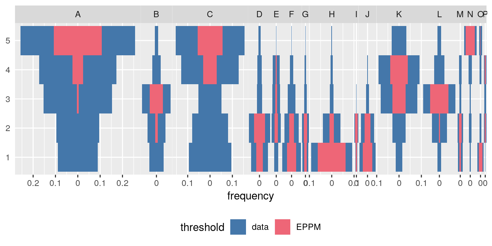
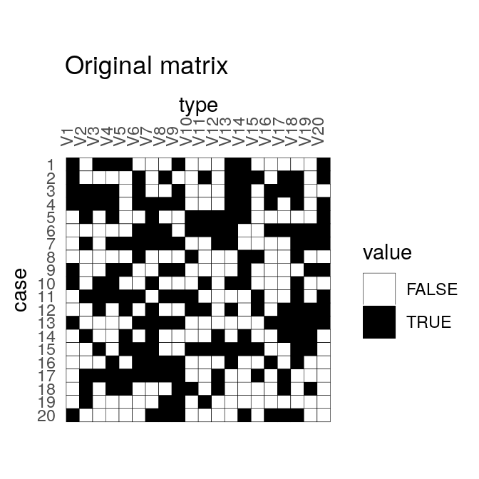
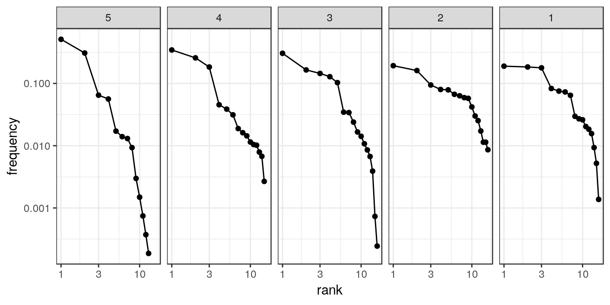

Overview
tabula provides an easy way to examine archaeological count data (artifacts, faunal remains, etc.). This package includes several measures of diversity: e.g. richness and rarefaction (Chao1, Chao2, ACE, ICE, etc.), diversity/dominance and evenness (Brillouin, Shannon, Simpson, etc.), turnover and similarity (Brainerd-Robinson, …). It also provides matrix seriation methods (reciprocal ranking, CA-based seriation) for chronological modeling and dating. The package make it easy to visualize count data and statistical thresholds: rank/abundance plots, Ford and Bertin diagrams, etc.
Installation
You can install the released version of tabula from CRAN with:
Or install the development version from GitHub with:
Usage
tabula provides a set of S4 classes that extend the matrix data type from R base. These new classes represent different special types of matrix.
- Abundance matrix:
-
CountMatrixrepresents count data, -
FrequencyMatrixrepresents relative frequency data.
-
- Logical matrix:
-
IncidenceMatrixrepresents presence/absence data.
-
- Other numeric matrix:
-
OccurrenceMatrixrepresents a co-occurence matrix. -
SimilarityMatrixrepresents a (dis)similarity matrix.
-
It assumes that you keep your data tidy: each variable (type/taxa) must be saved in its own column and each observation (sample/case) must be saved in its own row.
These new classes are of simple use, on the same way as the base matrix:
# Define a count data matrix
quanti <- CountMatrix(data = sample(0:10, 100, TRUE),
nrow = 10, ncol = 10)
# Define a logical matrix
# Data will be coerced with as.logical()
quali <- IncidenceMatrix(data = sample(0:1, 100, TRUE),
nrow = 10, ncol = 10)tabula uses coercing mechanisms (with validation methods) for data type conversions:
# Create a count matrix
A1 <- CountMatrix(data = sample(0:10, 100, TRUE),
nrow = 10, ncol = 10)
# Coerce counts to frequencies
B <- as(A1, "FrequencyMatrix")
# Row sums are internally stored before coercing to a frequency matrix
# (use totals() to get these values)
# This allows to restore the source data
A2 <- as(B, "CountMatrix")
all(A1 == A2)
#> [1] TRUE
# Coerce to presence/absence
C <- as(A1, "IncidenceMatrix")
# Coerce to a co-occurrence matrix
D <- as(A1, "OccurrenceMatrix")Several types of graphs are available in tabula which uses ggplot2 for plotting informations. This makes it easy to customize diagramms (e.g. using themes and scales).
Spot matrix (easier to read than a heatmap 1) allows direct examination of data (above/below some threshold):
# Plot frequencies with the column means as a threshold
ceram_counts <- as(mississippi, "CountMatrix")
plotSpot(ceram_counts, threshold = mean) +
ggplot2::labs(size = "Frequency", colour = "Mean") +
khroma::scale_colour_vibrant()
# Plot co-occurence of types
# (i.e. how many times (percent) each pairs of taxa occur together
# in at least one sample.)
ceram_occ <- as(mississippi, "OccurrenceMatrix")
plotSpot(ceram_occ) +
ggplot2::labs(size = "", colour = "Co-occurrence") +
ggplot2::theme(legend.box = "horizontal") +
khroma::scale_colour_YlOrBr()
Bertin or Ford (battleship curve) diagramms can be plotted, with statistic threshold (B. Desachy’s sériographe). The positive difference from the column mean percentage (in french “écart positif au pourcentage moyen”, EPPM) represents a deviation from the situation of statistical independence. EPPM is a usefull graphical tool to explore significance of relationship between rows and columns related to seriation.

Seriation
# Build an incidence matrix with random data
set.seed(12345)
incidence <- IncidenceMatrix(data = sample(0:1, 400, TRUE, c(0.6, 0.4)),
nrow = 20)
# Get seriation order on rows and columns
# Correspondance analysis-based seriation
(indices <- seriate(incidence, method = "correspondance", margin = c(1, 2)))
#> Permutation order for matrix seriation:
#> Row order: 20 16 13 4 3 1 9 10 19 2 7 6 17 11 5 14 12 8 15 18
#> Column order: 16 1 9 8 4 14 13 18 20 6 7 3 17 2 11 19 5 15 12 10
#> Method: correspondance
# Permute matrix rows and columns
incidence2 <- permute(incidence, indices)# Plot matrix
plotMatrix(incidence) +
ggplot2::labs(title = "Original matrix") +
ggplot2::scale_fill_manual(values = c("TRUE" = "black", "FALSE" = "white"))
plotMatrix(incidence2) +
ggplot2::labs(title = "Rearranged matrix") +
ggplot2::scale_fill_manual(values = c("TRUE" = "black", "FALSE" = "white"))
Dating
This package provides an implementation of the chronological modeling method developed by Bellanger and Husi (2012). This allows the construction of two different probability estimate density curves of archaeological assembalge dates (the so-called event and accumulation dates). Note that this implementation is experimental (see help(dateEvent)).

Analysis
Diversity can be measured according to several indices (sometimes refered to as indices of heterogeneity):
H <- diversity(ceram_counts, method = c("shannon", "brillouin", "simpson",
"mcintosh", "berger"), simplify = TRUE)
head(H)
#> shannon brillouin simpson mcintosh berger
#> 10-P-1 1.2027955 1.1572676 0.3166495 0.4714431 0.4052288
#> 11-N-9 0.7646565 0.7541207 0.5537760 0.2650711 0.6965699
#> 11-N-1 0.9293974 0.9192403 0.5047209 0.2975381 0.6638526
#> 11-O-10 0.8228576 0.8085445 0.5072514 0.2990830 0.6332288
#> 11-N-4 0.7901428 0.7823396 0.5018826 0.2997089 0.6034755
#> 13-N-5 0.9998430 0.9442803 0.3823434 0.4229570 0.4430380Note that berger, mcintosh and simpson methods return a dominance index, not the reciprocal form usually adopted, so that an increase in the value of the index accompanies a decrease in diversity.
Corresponding evenness (i.e. a measure of how evenly individuals are distributed across the sample) can also be computed.
Several methods can be used to acertain the degree of turnover in taxa composition along a gradient (\(\beta\)-diversity) on qualitative (presence/absence) data. It assumes that the order of the matrix rows (from \(1\) to \(n\)) follows the progression along the gradient/transect.
\(\beta\)-diversity can also be measured by addressing similarity between pairs of sites:
# Brainerd-Robinson index
S <- similarity(ceram_counts, method = "brainerd")
# Plot the similarity matrix
plotSpot(S) +
ggplot2::labs(size = "Similarity", colour = "Similarity") +
khroma::scale_colour_YlOrBr()
Ranks vs abundance plot can be used for abundance models (model fitting will be implemented in a futur release):

Contributing
Please note that the tabula project is released with a Contributor Code of Conduct. By contributing to this project, you agree to abide by its terms.
Adapted from Dan Gopstein’s original spot matrix.↩